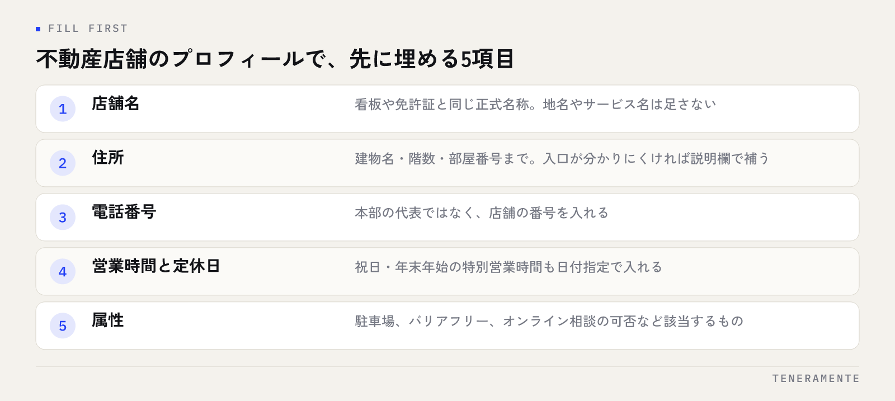

部屋を探す人は、いきなり店に電話をかけません。地図アプリで近くの不動産会社を並べ、写真と口コミを見て、行く店を1つか2つに絞ってから連絡します。不動産会社のMEO対策で問われるのは情報の多さではなく、「この店に行けば話が進みそうか」が画面の中で伝わるかどうかです。
📌 この記事の結論
先に手を付けるのは店舗情報の空欄を埋めることと、口コミへの返信を止めないことの2つです。写真の追加や投稿はそのあとで構いません。来店前の不安を1つずつ消していく作業だと考えると、やる順番が自然に決まります。
01賃貸仲介の店舗とMEO対策は相性がよい
MEO対策（Googleマップでの上位表示に向けた取り組み）が効きやすいかどうかは、業種によって差があります。賃貸仲介は、効きやすい側の業種です。
理由は3つあります。まず、部屋探しは最初から地域が決まっています。「新宿 賃貸」のように、検索そのものに地名が入るため、地図の結果が画面の上のほうに出ます。次に、来店が前提の商売です。地図からの電話やルート検索が、そのまま来店につながります。最後に、営業時間や定休日といった情報が、行動を決める材料になります。
一方で、駅前には同業の店舗が並びます。地図の上では、自社の店と近隣の店が同じ大きさで横に並びます。そこで比べられるのは会社の規模ではなく、画面に出ている情報の揃い具合です。MEOの基本的な考え方はMEO対策の完全ガイドに整理していますので、全体像から確認したい場合はそちらもあわせてご覧ください。
02店舗情報は「来店できるか」が分かるところまで埋める
最初の作業は、Googleビジネスプロフィールの空欄を埋めることです。ここは費用もかからず、その日のうちに終わります。

賃貸仲介の店舗で埋め忘れが多いのは、建物名と階数、駐車場の有無、定休日の3つです。雑居ビルの2階にある店は、1階に別の店が入っていると「見つからない」が起きます。車で来店する地域なら、駐車場の有無は来店するかどうかの判断に直結します。
- 店舗名：看板や免許証と同じ正式名称にします。地名やサービス名を足しません
- 住所：建物名と階数、部屋番号まで入れます。入口が分かりにくい場合は説明欄で補います
- 電話番号：店舗の番号を入れます。本部の代表番号にすると、来店の問い合わせが遠回りになります
- 営業時間と定休日：祝日と年末年始の特別営業時間も入れます
- 属性：駐車場、バリアフリー、オンライン相談の可否など、該当するものを選びます
店舗名・住所・電話番号の3つは、自社サイトやポータルサイトの掲載内容と一字一句そろえてください。考え方はNAP情報の統一とはにまとめています。
繁忙期の営業時間は、先に入れておく
1月から3月は営業時間を延ばしたり、定休日を変えたりする店舗が多い時期です。変更を反映しないままにすると、閉まっていると思われて別の店に行かれます。特別営業時間は日付を指定して先に入れられるので、年末のうちに登録しておくと手間が減ります。
03カテゴリは、実際にやっている業務だけを選ぶ
カテゴリは表示される検索語に関わる項目です。賃貸仲介の店舗なら、メインカテゴリは実際の主業務に合わせます。
迷いやすいのは、管理業務や売買も扱っている場合です。原則は、来店する人がいちばん多い業務をメインにし、実際に行っている他の業務をサブに足すことです。やっていない業務のカテゴリを入れると、問い合わせの内容と店舗の実態がずれ、断る電話が増えます。評価にもつながりません。
サブカテゴリは増やしすぎないでください。店舗の実態から離れた語が並ぶと、何の店か分かりにくくなります。選び方の基準はGoogleビジネスプロフィールのカテゴリの選び方で詳しく整理しています。
04写真は物件ではなく、店舗と人を見せる
不動産会社のプロフィールでよくあるのが、物件の写真を並べてしまう形です。物件を見せる場所は自社サイトやポータルサイトで、地図の写真が答えるのは別の問いです。
来店前の人が写真で確かめたいのは、どこにあるか、入りやすいか、誰が対応するかの3つです。そろえる写真は次のとおりです。
- 外観（引き）：目印になる建物や交差点が一緒に写っているもの
- 入口：扉と看板が正面から分かるもの。ビルの場合はエントランスも
- 店内：相談スペース、カウンター、待ち合いの様子
- スタッフ：対応する人の雰囲気が伝わるもの。本人の了解を取って掲載します
撮るときの注意点が1つあります。店内の写真に、掲示している物件図面や契約書類、モニターの画面が写り込まないようにしてください。入居者や申込者の情報が写ると、個人情報の取り扱いの問題になります。撮影後に必ず拡大して確認してから載せます。
05口コミは、依頼の時機と返信の型を決める
口コミは、賃貸仲介でもっとも差が出やすい部分です。契約から引き渡しまでの間に、必ずお客様と対面する機会があるためです。
依頼の時機は、鍵の引き渡しのときが自然です。部屋が決まり、手続きが終わった直後なので、こちらからお願いしても押し付けになりません。依頼のときに守る点は2つあります。謝礼や割引と引き換えに口コミを依頼しないこと、そして内容を指定しないことです。どちらもガイドラインに反します。
返信は型を決めておくと、担当者が変わっても止まりません。
| 口コミの種類 | 返信の組み立て | 避けること |
|---|---|---|
| 高評価 | お礼 → 内容に触れる → 入居後も相談できることを添える | 定型文のコピー。全部同じ文面は見れば分かります |
| 具体的な指摘 | お礼 → 指摘を受け止める → 改めた点か、これから確かめる旨 | 言い訳、担当者個人への言及 |
| 事実と違う内容 | 事実確認をしたい旨を短く → 直接の連絡先を示さず、店舗で承る旨 | 反論、感情的な表現、やり取りの詳細を書くこと |
返信で絶対に書いてはいけないのが、契約内容や物件が特定できる情報です。「◯◯マンションの件では」と書いた時点で、その人の住所が公開の場に出ます。やり取りの詳細は店頭か電話に移してください。
06投稿とQ&Aで、来店前の疑問を先に消す
店舗情報と口コミが整ったら、投稿とQ&Aに手を広げます。この2つは、電話で聞かれることをあらかじめ書いておく場所だと考えると使い道が決まります。
投稿に向くのは、繁忙期の営業時間、来店予約の方法、取り扱いエリアや物件の種別、オンライン相談の可否といった内容です。物件情報を並べる場所ではありません。
Q&Aは、自社で質問と回答の両方を登録できます。来店前に聞かれやすいものを先に載せておきます。
- 予約なしで行っても相談できますか
- 来店のときに必要な持ち物はありますか
- 何時までに行けば当日の内見に間に合いますか
- 駐車場はありますか
- 取り扱っているのは賃貸だけですか
宅地建物取引業法の広告ルールは、地図の中でも同じです
投稿や写真で物件を紹介する場合、取引態様の明示や、成約済み物件を載せないといった広告の決まりは自社サイトと同じように適用されます。地図のプロフィールだから緩い、ということはありません。物件を扱うより、店舗の情報と相談の受け方を書くほうが、手間も少なく安全です。
07月1回、同じ項目で確認する
MEOは一度整えて終わりではありませんが、毎日見る必要もありません。月に1回、同じ項目を確認する形にすると続きます。
- 営業時間が実態と合っているか（翌月の祝日を含む）
- 電話番号が転送や欠番になっていないか
- 未返信の口コミが残っていないか
- 写真に古い内装や退職したスタッフが残っていないか
- プロフィールを編集できる人が社内にいるか（異動・退職の確認）
最後の項目は見落としがちです。担当者の退職でオーナー権限が失われると、情報の修正ができなくなります。人の入れ替わりがあった月は、権限の一覧を必ず見てください。
店舗名に「◯◯駅前」や「賃貸」を足すと、表示されやすくなりますか？
口コミが少ない状態から、どう増やせばよいですか？
低い評価の口コミが付いたとき、削除はできますか？
08まとめ：空欄を埋め、返信を止めないところから
不動産会社のMEO対策は、順番を決めれば1人でも回せます。まず店舗情報の空欄を埋め、カテゴリを実態に合わせる。次に店舗と人が分かる写真をそろえる。そのうえで、口コミの依頼の時機と返信の型を決めて止めない。投稿とQ&Aは、電話で聞かれることを先に書いておく場所として使う。この順番なら、手を付けた分だけ画面が変わります。
地図の中で比べられているのは、会社の規模ではなく情報の揃い具合です。駅前に同業が並ぶ地域ほど、空欄の少なさがそのまま差になります。月1回、同じ項目で見直す形まで作れば、繁忙期に入ってからあわてる場面も減ります。
TENERAMENTEでは、不動産店舗のGoogleビジネスプロフィールについて、情報の整備から口コミ返信の型づくり、月次の確認までを運用の形に落とすところからお手伝いしています。進め方はMEO対策のページにまとめていますので、どこから手を付けるか迷っている場合はお問い合わせよりお気軽にご相談ください。